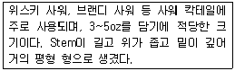
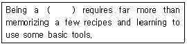
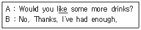

조주기능사 (2008-03-30 기출문제)
1과목: 주류학개론
1. 다음 중 Long Drink가 아닌 것은?
- Pina Colada
- Manhattan
- Singapore Sling
- Rum Punch
(정답률: 76%)

2. 로제와인에 대한 설명으로 틀린 것은?
- 대체로 붉은 포도로 만든다.
- 제조시 포도껍질을 같이 넣고 발효시킨다.
- 오래 숙성시키지 않고 마시는 것이 좋다.
- 일반적으로 상온(17-18℃)정도로 해서 마신다.
(정답률: 55%)
3. 프랑스에서 스파클링 와인 명칭은?
- Vin Mousseux
- Sekt
- Spumante
- Perlwein
(정답률: 67%)
4. 탄산음료나 샴페인을 사용하고 남은 일부를 보관 할 때 사용되는 기구는?
- 코스터
- 스토퍼
- 폴러
- 코르크
(정답률: 80%)
5. 다음 중 얼음을 넣어서 마실 수 있는 것은?
- Champagne
- Vermouth
- White Wine
- Red Wine
(정답률: 78%)
6. 다음 중 Wine base 칵테일이 아닌 것은?
- kir
- Blue hawaiian
- Spritzer
- Mimosa
(정답률: 83%)
7. 조선시대에 유입된 외래주가 아닌 것은?
- 천축주
- 섬라주
- 금화주
- 두견주
(정답률: 57%)
8. 다음 중 식사 전의 음료로서 적합하지 못한 것은?
- Sherry
- Vermouth
- Martini
- Brandy
(정답률: 37%)
9. 다음 중 작품 완성 후 Nutmeg를 뿌려 제공하는 것은?
- Egg Nogg
- Tom Collins
- Sloe Gin Fizz
- Paradise
(정답률: 54%)
10. 다음 중 비탄산성 음료는?
- Mineral water
- Soda water
- Tonic water
- Cider
(정답률: 81%)
11. 다음 중 Tequila와 관계가 없는 것은?
- 용설란
- 풀케
- 멕시코
- 사탕수수
(정답률: 77%)
12. 호크(Hock) 와인이란?
- 독일 라인산 화이트와인
- 프랑스 버건디산 화이트와인
- 스페인 호크하임엘산 레드와인
- 이탈리아 피에몬테산 레드와인
(정답률: 82%)
13. Matini의 클라스로 적합한 것은?
- 하이볼 글라스
- 위스키사워 글라스
- 칵테일 글라스
- 올드패션 글라스
(정답률: 80%)
14. Liqueur병에 적혀있는 D.O.M의 의미는?
- 이탈리아어의 약자로 '최고의 리큐르'라는 뜻이다
- 라틴어로서 베네딕틴 술을 말하며, '최선, 최대의 신에게'라는 뜻이다.
- 15년 이상 숙성된 약술을 의미한다.
- 프랑스 상빠뉴 지방에서 생산된 리큐르를 의미한다.
(정답률: 91%)
15. 다음 중 연속식 증류법으로 증류하는 위스키는?
- Irish Whiskey
- Blened Whiskey
- Malt Whiskey
- Grain Whiskey
(정답률: 37%)
16. 일반적으로 Old fashioned glass를 가장 많이 사용해서 마시는 것은?
- Whisky
- Beer
- Champagne
- Red Eye
(정답률: 81%)
17. 클라레(Claret)는 어떤 와인인가?
- 레드와인
- 화이트와인
- 로제와인
- 옐로와인
(정답률: 46%)
18. 다음 중 Brandy의 숙성 연수가 가장 긴 것은?
- V.O
- V.S.O
- V.S.O.P
- X.O
(정답률: 72%)
19. 1 쿼트(qoart)는 몇 온스인가?
- 64oz
- 50oz
- 38oz
- 32oz
(정답률: 77%)
20. 조주시 Shaker를 사용하는 칵테일은?
- Manhattan
- Cuba libre
- Rob Roy
- Whiskey Sour
(정답률: 35%)
21. 다음 중 Irish Whiskey는?
- JohnnieWalker Blue
- Jonh Jameson
- Wild Turkey
- Crown Royal
(정답률: 67%)
22. 프랑스에서 생산되는 칼바도스는 어느 종류에 속하는가?
- Brandy
- Gin
- Wine
- Whiskey
(정답률: 73%)
23. 감자를 주 원료로 해서 만드는 북유럽의 스칸디나비아 술로 유명한 것은?
- Apuavit
- Calbados
- Steinhager
- Grappa
(정답률: 78%)
24. 다음 중 양조주가 아닌 것은?
- 소주
- 레드와인
- 맥주
- 청주
(정답률: 70%)
25. 경우에 따라 고객에게 제공할 때 미리 병마개를 따놓는 것은?
- 샴페인
- 레드와인
- 맥주
- 위스키
(정답률: 56%)
26. 칵테일 장식과 그 용도가 적합하지 않은 것은?
- 체리 - 감미타입 칵테일
- 올리브 - 쌉쌀한 맛의 칵테일
- 오렌지 - 오렌지 주스를 사용한 롱 드링크
- 셀러리 - 달콤한 칵테일
(정답률: 85%)
27. 부드러우며 뒤끝이 깨끗한 약주로서 쌀로 빚으며 소주에 배, 생강, 울금 등 한약재를 넣어 숙성시킨 전북 전주의 전통주는?
- 두견주
- 국화주
- 이강주
- 춘향주
(정답률: 73%)
28. 다음 중 혼성주에 속하는 것은?
- London dry gin
- Creme de Cacao
- Schnaps
- Moet et Chandon
(정답률: 67%)
29. 다음 중 1pony의 액체 분량과 다른 것은?
- 1oz
- 30㎖
- 1pint
- 1shot
(정답률: 62%)
30. 계량단위의 1½oz는 몇 ㎖인가?
- 15㎖
- 25㎖
- 35㎖
- 45㎖
(정답률: 63%)
2과목: 주장관리개론
31. 월 재고회전율을 구하는 식은?
- 총 매출원가 / 평균 재고액
- 평균 재고액 / 총 매출원가
- (월말재고 - 월초재고) * 100
- (월초재고 + 월말재고) / 2
(정답률: 33%)
32. wood muddler의 용도는?(오류 신고가 접수된 문제입니다. 반드시 정답과 해설을 확인하시기 바랍니다.)
- 스파이스나 향료를 으깰 때 사용한다.
- 레몬을 스퀴즈 할 때 사용한다.
- 칵테일을 휘저을 때 사용한다.
- 브랜디를 띄울 때 사용한다.
(정답률: 32%)
33. 각 맥주에 대한 설명이 옳은 것은?
- Stout : 발효시켜 밀의 함량이 많고 호프를 조금 첨가한 맥주이다.
- Root Beer : 엿기름으로 발효한 달콤한 맥주이다.
- Lambics : 자연효모와 젖산류를 첨가하여 자연 발효 시킨 맥주이다.
- Malt Beer : 샤르샤 나무뿌리로 만든 생맥주이다.
(정답률: 42%)
34. 재고가 적정재고 수준 이상으로 과도할 경우 나타나는 현상이 아닌 것은?
- 필요 이상의 유지 관리비가 요구된다.
- 기회 이익이 상실된다.
- 판매 기회가 상실된다.
- 과다한 자본이 재고에 묶이게 된다.
(정답률: 71%)
35. Dispenser용 Soft Drink 보관 방법으로 맞는 것은?
- 온도차가 큰 곳에 보관한다.
- 시원하고 그늘진 곳에 보관한다.
- 햇볕이 들어오는 창가에 보관한다.
- 열기가 많은 주방에 보관한다.
(정답률: 87%)
36. 바(Bar)영업을 하기 위한 Bartender의 역할이 아닌 것은?
- 음료에 대한 충분한 지식을 숙지하여야 한다.
- 칵테일에 필요한 Garnish를 준비한다.
- Bar Counter 내의 청결을 수시로 관리한다.
- 영업장의 책임자로서 모든 영업에 책임을 진다.
(정답률: 86%)
37. 주장관리에서 핵심적인 원가의 3요소는?
- 재료비, 인건비, 주장경비
- 세금, 봉사료, 인건비
- 인건비, 주세, 재료비
- 재료비, 세금, 주장경비
(정답률: 88%)
38. 저장관리 방법 중 FIFO란?
- 선입선출
- 선입후출
- 후입선출
- 임의불출
(정답률: 100%)
39. 다음 중 세균이 침투하기에 가장 용의한 기물로 위생관리에 철저를 기해야 하는 것은?
- lemon Squeezer
- Jigger
- Ice Scooper
- Kitchen Board
(정답률: 33%)
40. 실제원가가 표준원가를 초과하게 되는 원인이 아닌 것은?
- 재료의 과도한 별질 발생
- 도난 발생
- 계획대비 소량 생산
- 잔여분의 식 자재 활용 미숙
(정답률: 64%)
41. Standard recipe란?
- 표준 판매가
- 표준 제조표
- 표준 조직표
- 표준 구매가
(정답률: 52%)
42. 다음 중 After Dinner Cocktail은?
- Campari Soda
- Dry Martini
- Negroni
- Pousse Cafe
(정답률: 54%)
43. 일드 테스트(Yield test)란?
- 산출량 실험
- 종사원들의 양보성향 조사
- 알코올 도수 실험
- 재고 조사
(정답률: 47%)
44. 맥주의 재료 중 맛과 잡균 번식 억제에 관여하며, 약리작용의 역할을 하는 것은?
- 맥아
- 효모
- 보리
- 호프
(정답률: 52%)
45. 다음 중 floating 하는 칵테일은?
- Rob Roy
- Angel's Kiss
- Margarita
- Screw Driver
(정답률: 43%)
46. 칵테일에 관련된 각 용어의 설명이 틀린 것은?
- Cocktail Pick - 장식에 사용하는 핀이다.
- Peel - 과일 껍질이다.
- Decanter - 신맛이라는 뜻을 가지고 있다.
- Fix - 약간 달고, 맛이 강한 칵테일의 종류이다.
(정답률: 83%)
47. 아래에서 설명하는 Glass는?

- Goblet
- Wine glass
- Sour glass
- Cocktail glass
(정답률: 91%)
48. Shaker의 사용 방법으로 가장 적합한 것은?
- 사용하기 전에 씻어서 사용한다.
- 술을 먼저 넣고 그 다음에 얼음을 채운다.
- 얼음을 채운 후에 술을 따른다.
- 부재료를 넣고 술을 넣은 후에 얼음을 채운다.
(정답률: 68%)
49. 다음 중 Gibson의 Garnish는?
- olive
- onion
- cherry
- lemon
(정답률: 93%)
50. 칵테일을 만드는 기법 중 Stirring에서 사용하는 도구와 거리가 먼 것은?
- Mixing Glass
- Bar Spoon
- Shaker
- Strainer
(정답률: 79%)
3과목: 고객서비스영어
51. 다음 중 의미가 다른 하나는?
- It's my treat this time.
- I'll pick up the tab
- Let's go Dutch
- It's on me
(정답률: 74%)
52. This milk has gone bad의 뜻은?
- 우유가 상했다.
- 우유가 맛이 없다.
- 우유가 신선하다.
- 우유에 나쁜 것이 있다.
(정답률: 88%)
53. “우리 호텔을 떠나십니까?” 의 올바른 표현은?
- Do you Start our hotel?
- Are you leave our hotel?
- Are you leaving our hotel?
- Do you go our hotel?
(정답률: 65%)
54. “The meeting was postponed until tomorrow morning.”의 문장에서 Postponed와 가장 가까운 뜻은?
- cancelled
- finished
- put off
- taken off
(정답률: 58%)
55. Which one is the cocktail containing "wine"?
- Sangria
- Sidecar
- Sloe Gin
- Black Russian
(정답률: 50%)
56. 다음 ( )안에 들어갈 알맞은 단어는?

- Shaker
- Jigger
- bartender
- Corkscrew
(정답률: 65%)
57. Which one is the classical French liqueur of aperitif?
- Dubonnet
- Sherry
- Mosel
- Campari
(정답률: 13%)
58. What is the meaning of A L'a Carte Menu?
- Daily special menu.
- One of the cafeteria menu.
- Many items are included on the menu.
- Each item can be ordered separately.
(정답률: 13%)
59. 다음 밑줄 친 단어와 바꾸어 쓸 수 있는 것은?

- care in
- care of
- care to
- care for
(정답률: 73%)
60. Which is the correct one as a base of Sidecar in the following?
- bourbon whisky
- brandy
- gin
- vodka
(정답률: 33%)